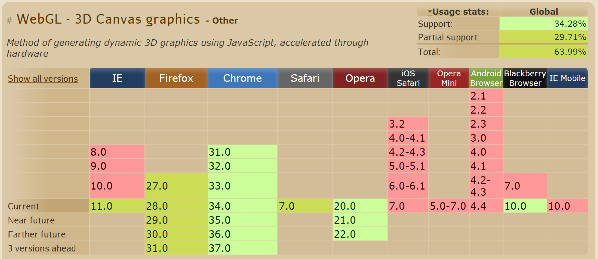
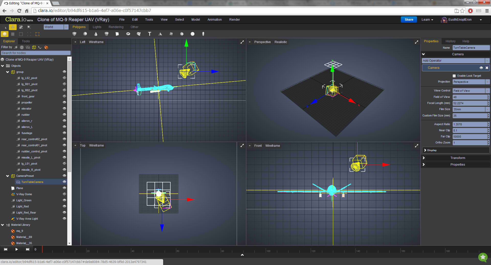

3D Goes Online
by Simon Meer
Web + 3D
Technologies
- CSS3 (you're looking at it)
- Canvas
- 2D
- 3D (WebGL)
What is WebGL?
WebGL (Web Graphics Library) is a JavaScript API for rendering interactive 3D graphics and 2D graphics within any compatible web browser without the use of plug-ins.
- Based on OpenGL ES 2.0
(OpenGL for Embedded Systems) -
Allows the use of GLSL shaders
(OpenGL Shading Language)
History
- 2006: First experiments at Mozilla
- 2009: Khronos Group founds the WebGL Working Group
- 2011: WebGL specification is released
- 2013: Work on new specification begins
(OpenGL ES 3.0)
How it works
- Don't use as-is.
- Very low-level:
- Define vertex shader
- Define fragment shader
- Define vertices
- ...
Libraries
- Three.js
- GLGE
- PhiloGL
- Canvas 3d
- sceneJS
- ...
Example
// revolutions per second
var angularSpeed = 0.2;
var lastTime = 0;
// this function is executed on each animation frame
function animate(){
// update scene
// ...
}
// renderer
var renderer = new THREE.WebGLRenderer();
renderer.setSize(window.innerWidth, window.innerHeight);
document.body.appendChild(renderer.domElement);
// camera
var camera = new THREE.PerspectiveCamera(45, window.innerWidth / window.innerHeight, 1, 1000);
camera.position.z = 500;
// scene
var scene = new THREE.Scene();
// cube
var cube = new THREE.Mesh(new THREE.CubeGeometry(200, 200, 200), new THREE.MeshNormalMaterial());
scene.add(cube);
// start animation
animate();Situation
- Mostly demos and music videos
- Technology wide-spread

- There are some real-world applications

- Is not taken all that seriously
- But might gain some momentum!
Questions

Discussion
How will WebGL influence the game scene?
Can you imagine other uses for 3D in the browser?